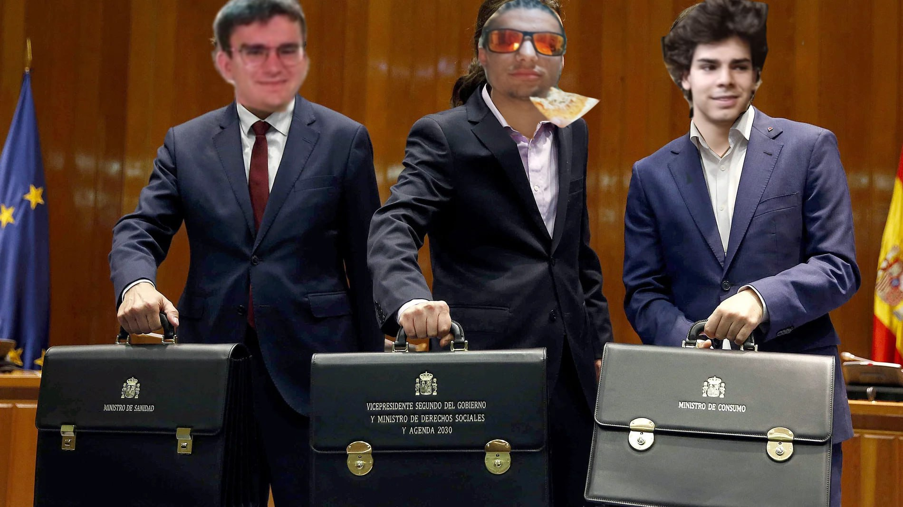
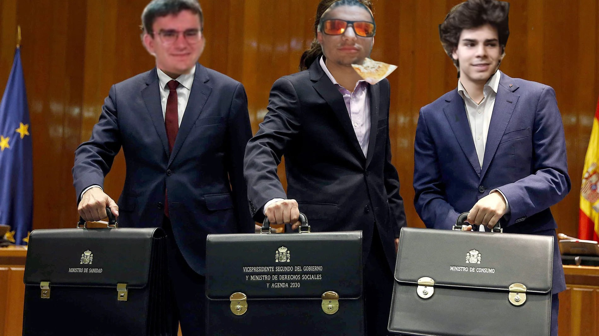

Bienvenido a Cumstadística
La estadística no es solo números, es poder. Aquí exploramos los datos y los transformamos en información útil para el análisis y la toma de decisiones.
La estadística no es solo números, es poder. Aquí exploramos los datos y los transformamos en información útil para el análisis y la toma de decisiones.
La razón de la cancelación del famoso programa “Monstruos de río” protagonizado por Jeremy Wade, es q Jeremy Wade cazó todos los monstruos
España es junto con Rusia uno de los pocos países europeos que no reconoce oficialmente a Kosovo porque si Kosovo se va de Serbia que pasa con los catalufos.

Felicitaciones de parte de toda Cumstadística, enhorabuena J! 👏👏👏
Históricamente, tan solo Fonseca y Phil Collins han podido romper con el tópico de que por separado se puede ir mejor que en grupo


El árbol de la ciencia es, para mí, un libro algo peculiar. El relato trascurre lentamente, aunque realmente abarque unos quince años de la vida de Andrés Hurtado, el protagonista.
De las cosas que más me han impresionado de este libro y de la manera de escribir que tiene el autor, podría nombrar dos: Por una parte, los párrafos son a menudo muy escuetos, pero la narración se siente fluida y ágil, muy fácil de leer. Por otra, y esta en específico creo que es la que hace brillar a esta novela frente a otras de la misma calaña, son los personajes secundarios. El autor describe de una manera que roza lo burlesco, copiosamente aunque no tengan más de dos líneas de diálogo, a cualquiera de las personas que aparecen en el libro. Estas descripciones le aportan una vida y un interés muy ricos a la historia. Personajes como el del propio Andrés Hurtado o Lulú están excepcionalmente bien escritos en su complejidad.
Ahora bien, el libro, a mi parecer, también flaquea en algunos aspectos. Se narra la vida del protagonista, como digo de una manera muy detallada que te hace conectar con él, pero realmente poco pasa en su vida que merezca ser narrado. La historia, en bastantes ocasiones, parece que se mueve poco o nada en absoluto; y cuando lo hace, nos damos cuenta de que la trama no merecía la espera. Esto no es especialmente problemático en este caso, pues lo compensa con lo que he mencionado arriba, pero sí hace que la lectura se sienta aburrida.
La historia se divide en dos partes principales, divididas por un interludio filosófico entre Andrés y su tío Iturrioz, donde analizan la manera de pensar del joven. Esta parte, aun densa y pesada, me ha gustado mucho. La primera es bastante buena, pero algo lenta. La segunda es más densa en acontecimientos, y se hace más liviana.
Si Pío Baroja le hubiera dado este libro a C para que lo corrigiera, este le hubiera dicho que pasara la tijera.
En general, me ha gustado la manera en la que el personaje de Andrés evoluciona, y me parece realmente excelente la manera en la que se cuenta. Bien es cierto que hubiera agradecido un poco más de trama y menos rodeos, pero al final tengo que darle mis respetos a don Pío Baroja.
A ver U, no puedo rebatir nada porque el libro me lo leí hace 3 años, pero yo podría como un punto a favor de Pío Baroja que una vida anodina se haga entretenida de leer
Sobre el comentario de la tijera: no sé U, a mí no se me hizo pesado el libro, o mejor dicho recuerdo que se me haya hecho pesado. También hay que tener en cuenta en 1911 aún no se había inventado el déficit de atención
“De aquel que de su barrio no conoce ni un bar, no te puedes fiar.”
Créditos al pa de fonseca

el video más calmado de fonseca
El proyecto salvaje de jorge el salvaje estaría wapo si Jorge el salvaje dejara hablar a sus invitados

jordi madafakin wild encima de un opel corsa por sabadell en 2007
La cámara recorre un piso caótico. Una mesa llena de restos de pizza prosciutto (cortesía de J), una estantería llena de literatura rusa pachamamesca (gracias a U), y un rincón con un tablero lleno de diagramas maquiavélicos de C. De fondo, suena “Dancing Queen” de ABBA, porque J insiste en que es la mejor canción de la historia.
— Tíos, ¿os habéis parado a pensar que las Dinos son como la evolución? Estás comiendo historia pura. ¡Yo soy Darwin, pero con chocolate!
— J, lo único que evolucionas es el nivel de colesterol.
— No seáis comerciales, por favor. Estoy creando un ensayo sobre la influencia del periquito vietnamita en el movimiento indie.
— ¿El periquito qué? A ver, U, lo tuyo ya es pasarse. Ni los náhuatls entienden tus movidas.
— Claro que no lo entienden, J. Pero tú tampoco entendiste el menú del restaurante ayer. ¿Te acuerdas de lo de “bonitas piernas, a qué hora abren”? Qué vergüenza.
— No te pases, C. Al menos no vomité en el coche de mi viejo.
Silencio incómodo.
Los tres están sentados en la barra. J bebe vodka con cerveza porque es barato, U se pide una infusión ecológica de jengibre, y C pide un gintonic, porque según él, “es la bebida de los que saben calcular probabilidades”.
— Tíos, tengo una idea. Hay que hacer algo para romper con la monotonía. ¡Montemos un negocio!
— ¿Negocio? J, tu idea de negocio es vender palmeritas de chocolate puerta a puerta.
— ¿O qué tal un restaurante temático? Pero que solo sirva platos a base de quinoa. ¿Demasiado comercial para ti, J?
— No sé, U, pero prefiero vender quinoa que pasarme 8 horas leyendo a Dostoyevski y pensando que soy especial.
— A ver, dejad de dar vueltas. Si hacemos algo, será algo serio. Algo calculado. Montemos un club de póker. Yo manejo las probabilidades, U pone la imagen intelectual, y tú, J, eres el anzuelo perfecto: nadie te tomará en serio.
— C, algún día me respetarás. El día que deje de pedir pizza prosciutto… o cuando pierdas en póker contra un principiante.
Han montado un club en el piso. Las mesas están llenas de jugadores principiantes, atraídos por la promesa de “diversión sin compromiso”. U lleva un delantal pachamamesco mientras reparte té de jazmín, J anima a todos a apostar más, y C está concentrado, manejando las apuestas como si fuera el villano de una película de James Bond.
— Venga, tío, apuesta. El que perdona murió en la cruz, y tú no estás aquí para rezar.
— Este negocio tiene potencial, pero J tiene que dejar de hablar como un cuñado.
— Al menos está atrayendo gente. Eso sí, como esto se vuelva demasiado comercial, yo me largo. De repente, un tipo extraño entra en el club. Es Paco Luque, su antiguo profesor de Matemáticas y Física.
— Vaya, vaya. Así que aquí es donde terminan mis exalumnos. J vendiendo humo, C tramando estrategias, y U… bueno, haciendo lo que sea que hagas tú. ¿Cómo os va con los “datos crudos”?
— ¡Son datos brutos, Paco! ¡Brutos!
— Bueno, profe, ¿una partidita? Si pierde, paga la pizza prosciutto para todos.
— Acepto, pero si gano, quiero una exposición sobre por qué las gambas no se descabezan en un club de póker.
J está emocionado porque ganaron suficiente dinero para comprar más Dinosaurus. U está indignado porque ahora el club tiene una máquina de pinball, que él considera demasiado comercial. C, mientras tanto, planea cómo expandir el negocio.
— Esto no es el final. Esto es solo el principio. Corte a negro.
Tema de cierre: “Take a Chance on Me” de ABBA.